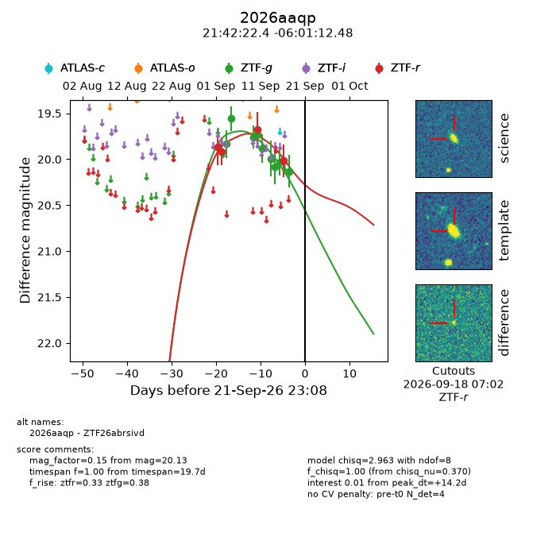
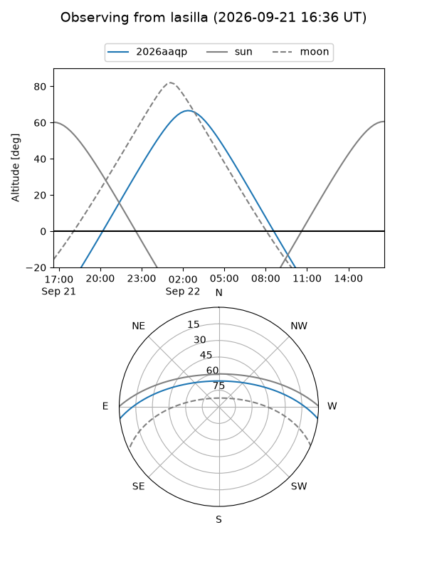
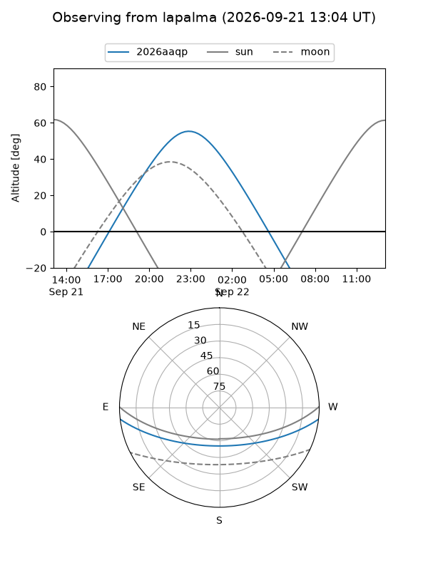
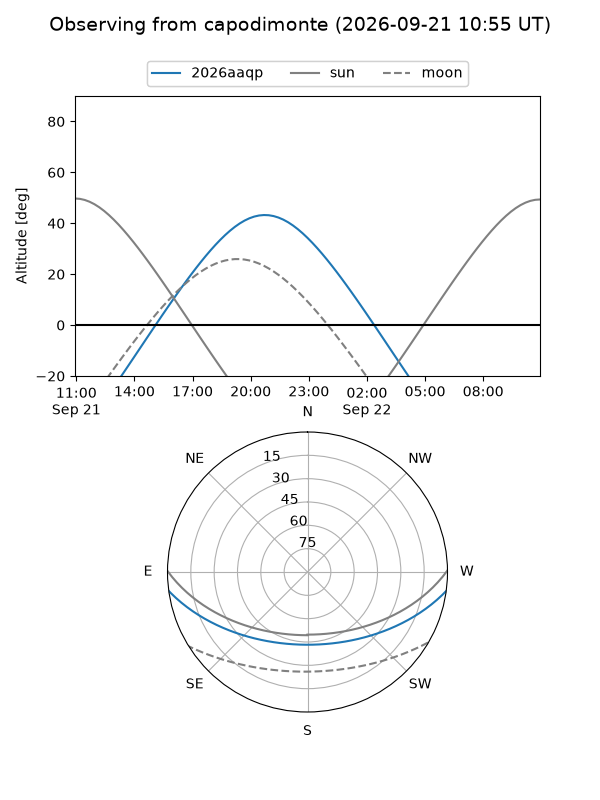
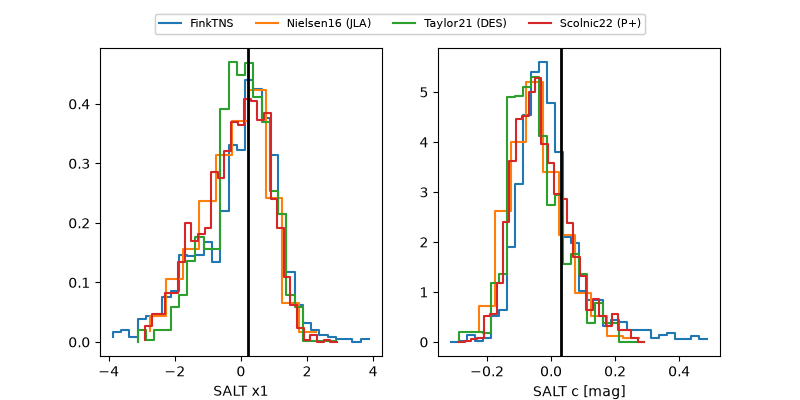

2026aaqp
Target 2026aaqp at 2026-09-22 11:10
Aliases and brokers:
FINK-ZTF: ztf.fink-portal.org/ZTF26abrsivd
Lasair-ZTF: lasair-ztf.lsst.ac.uk/objects/ZTF26abrsivd
ALeRCE-ZTF: alerce.online/object/ZTF26abrsivd
YSE-PZ: ziggy.ucolick.org/yse/transient_detail/2026aaqp
TNS name: wis-tns.org/object/2026aaqp
Direct TNS query: direct search
alt names
ZTF26abrsivd (ztf,fink_ztf)
2026aaqp (tns,yse)
Coordinates:
equatorial (ra, dec) = 325.5931,-6.02013
equatorial (HMS+DMS) = 21:42:22.35,-06:01:12.48
galactic (l, b) = (49.2881,-40.42335)
Flags:
TNS type: nan
peak dt: +14.7
Photometry:
last ztfg=20.13, ztfr=20.02
9 ztfg, 4 ztfr detections
Lightcurve

Visibility



Additional plots
